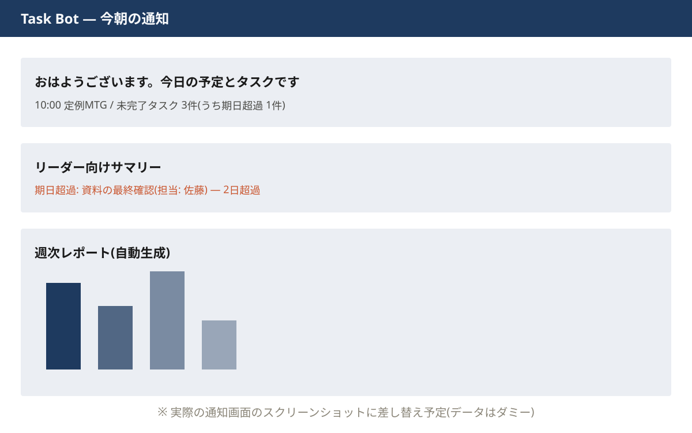

実運用中 — 勤務先チーム8名で稼働
Task Bot — チームタスク管理・自動通知システム
- 困っていたこと
- リモートチームのタスク共有が「毎朝の手動投稿とスレッド返信」頼み。投稿する人の負担が大きく、期日超過の見逃しも起きていました。
- 作ったもの
- Notion・Slack・Googleカレンダーをつないだ自動通知Bot。毎朝、各メンバーに予定と未完了タスクをDMし、リーダーには期日超過の一覧を届けます。週次レポートはグラフ付きで自動生成。
- どう変わったか
- 毎朝の投稿作業がゼロに。GitHub Actionsの定時実行なのでランニングコストも0円。導入から現在まで毎日稼働しています。
Python / Notion API / Slack API / Google Calendar API / GitHub Actions